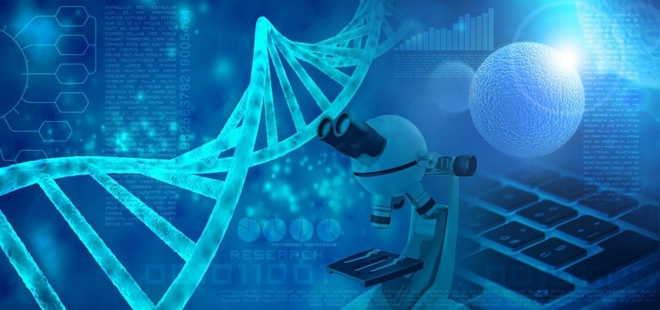
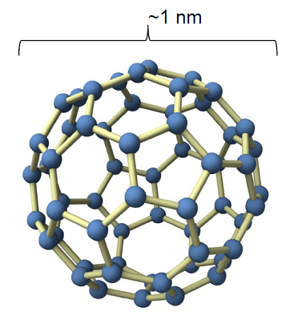
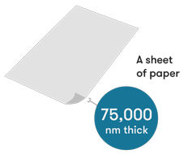
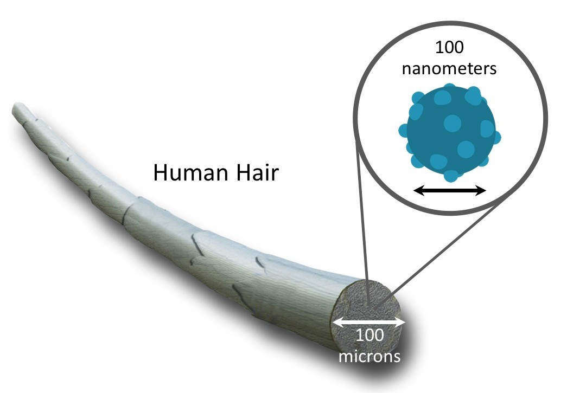
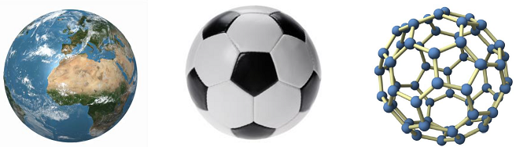
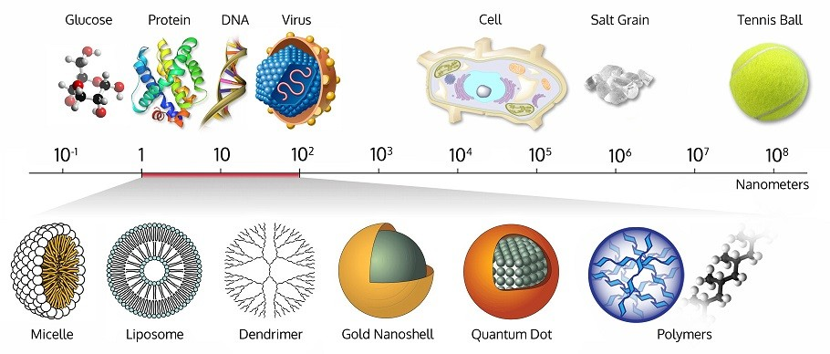
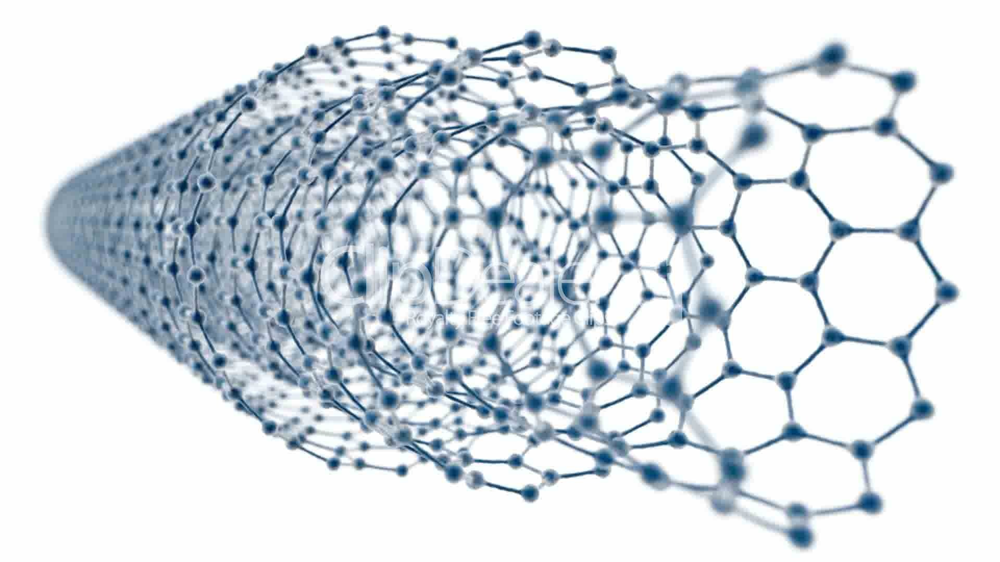
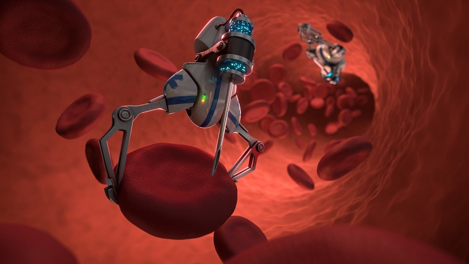
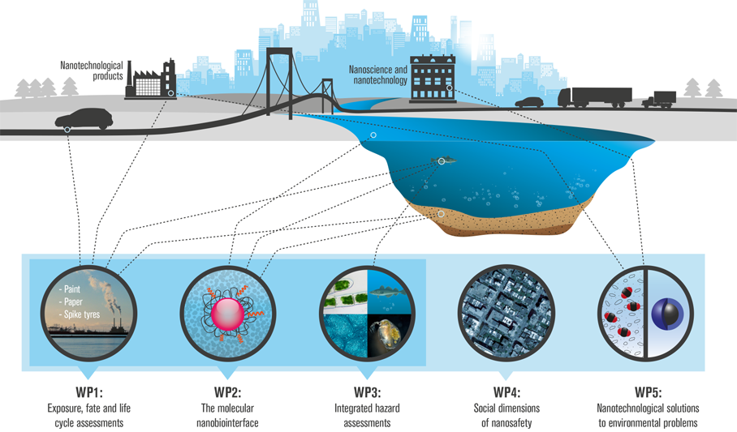

2019-07-16
Nanotechnology!
প্রবন্ধ-ইংরেজি
Nanotechnology is a common word these days, but many of us don’t realize the amazing impact it has on our daily lives. It is also a rapidly expanding field. Scientists and engineers are having great success making materials at the nanoscale to take advantage of enhanced properties such as higher strength, lighter weight, increased electrical conductivity, and chemical reactivity compared to their larger-scale equivalents.
What is Nano?
One nanometer is equivalent to a billionth of a meter. This is about the length of five to ten atoms in a row. A nanometer is to a meter what a football is to the entire earth.

What is Nanoparticle?
A nanoparticle is a small object that behaves as a whole unit in terms of its transport and properties. Basically, it's a nanoscale particle. Nanoparticles are particles between 1 and 100 nanometres in size with a surrounding interfacial layer. The interfacial layer is an integral part of nanoscale matter, fundamentally affecting all of its properties. The interfacial layer typically consists of ions, inorganic and organic molecules.
What are Nanoclusters / Nanopowders / Nanocrystals?
Nanoclusters have at least one dimension between 1 and 10 nanometers and narrow size distribution. Nanopowders, on the other hand, are agglomerates of ultrafine particles, nanoparticles, or nanoclusters. Nano-particle-sized crystals are called nanocrystals.
How big is "Nano"?
In the International System of Units, the prefix "nano" means one-billionth or 0.000000001; therefore one nanometer is one-billionth of a meter. It's difficult to imagine just how small that is, so here are some examples:


- A sheet of paper is about 100,000 nanometers thick.
- A strand of human DNA is 2.5 nanometers in diameter.
- There are 25,400,000 nanometers in one inch.
- A human hair is approximately 80,000- 100,000 nanometers wide.
- A single gold atom is about a third of a nanometer in diameter.
- On a comparative scale, if the diameter of a marble was one nanometer, the diameter of the Earth would be about one meter.
- One nanometer is about as long as your fingernail grows in one second.
- The ratio of Earth/Football = The ratio of Football/Fullerene.

What is Nanoscale?
The nanoscopic scale usually refers to structures with a length scale applicable to nanotechnology, usually cited as 1–100 nanometers. The nanoscopic scale is a lower bound to the mesoscopic scale for most solids.

What is Nanoscience?
Nanoscience is the study of structures and materials on the scale of nanometers. Nanoscience is concerned with materials and systems whose structures and components exhibit novel and significantly improved physical, chemical, and biological properties, phenomena, and processes, because of their small nanoscale size. Structural features in the range of about 10 Å to 1000 Å, determine important changes as compared to the behavior of isolated molecules (10Å) or of bulk materials (>0.1 µm). Nanoscience aims to understand the novel properties and phenomena of nano-based entities.
What is Nanotechnology?
The development of materials and devices by exploiting the characteristics of particles on the nano-scale is called nanotechnology. It is manipulation of matter on an atomic, molecular, and supramolecular scale. Nanotechnology is science, engineering, and technology conducted at the nanoscale, which is about 1 to 100 nanometers. Nanoscience and nanotechnology are the study and application of extremely small things and can be used across all the other science fields, such as chemistry, biology, physics, materials science, and engineering.
Advantages & Disadvantages of Nanotechnology:
- Manufacturing Advantages: Nanotechnology is already making new materials available that could revolutionize many areas of manufacturing. For example, nanotubes and nanoparticles, which are tubes and particles only a few atoms across, and aerogels, materials composed of very light and strong materials with remarkable insulating properties, could pave the way for new techniques and superior products. In addition, robots that are only a few nanometers in length called nanobots, and nano factories could help construct novel materials and objects.

- Energy Advantages: Nanotechnology may transform the ways in which we obtain and use energy. In particular, it's likely that nanotechnology will make solar power more economical by reducing the cost of constructing solar panels and related equipment. Energy storage devices will become more efficient as a result. Nanotechnology will also open up new methods of generating and storing energy.
- Advantages in Electronics and Computing: The field of electronics is set to be revolutionized by nanotechnology. Quantum dots, for example, are tiny light-producing cells that could be used for illumination or for purposes such as display screens. Silicon chips can already contain millions of components, but the technology is reaching its limit; at a certain point, circuits become so small that if a molecule is out of place the circuit won't work properly. Nanotechnology will allow circuits to be constructed very accurately on an atomic level.
- Medical Advantages: Nanotechnology has the potential to bring major advances in medicine. Nanobots could be sent into a patient's arteries to clear away blockages. Surgeries could become much faster and more accurate. Injuries could be repaired cell-by-cell. It may even become possible to heal genetic conditions by fixing the damaged genes. Nanotechnology could also be used to refine drug production, tailoring drugs at a molecular level to make them more effective and reduce side effects.

- Environmental Effects: Some of the more extravagant negative future scenarios have been debunked by experts in nanotechnology. For example, the so-called "gray goo" scenario, where self-replicating nanobots consume everything around them to make copies of themselves, was once widely discussed but is no longer considered to be a credible threat. It is possible, however, that there will be some negative effects on the environment as potential new toxins and pollutants may be created by nanotechnology.

- Economic Upheaval: It is likely that nanotechnology, like other technologies before it, will cause major changes in many economic areas. Although products made possible by nanotechnology will initially be expensive luxury or specialist items, once availability increases, more and more markets will feel the impact. Some technologies and materials may become obsolete, leading to companies specializing in those areas going out of business. Changes in manufacturing processes brought about by nanotechnology may result in job losses.
- Privacy and Security: Nanotechnology raises the possibility of microscopic recording devices, which would be virtually undetectable. More seriously, it is possible that nanotechnology could be weaponized. Atomic weapons would be easier to create and novel weapons might also be developed. One possibility is the so-called "smart bullet," a computerized bullet that could be controlled and aimed very accurately. These developments may prove a boon for the military; but if they fell into the wrong hands, the consequences would be dire.
In conclusion:
When asked about nanotechnology’s greatest potential for improving the state of the world, Markus Antonietti, director of Max Planck Institute of Colloids and Interfaces at Max Planck Institute for Evolutionary Biology, responded it was the purification of air and water.
“The technology already exists to fix the atmosphere,” he says.
“But there also needs to be a focus on education and getting information to the public at large. Most people still don’t know about these technologies. The best part is that all of this could happen immediately if we simply spread the information in an understandable way. People don’t read science journals, so they don’t even know that all of this is possible.”
Copyright © 2019, Mydul Islam | All Rights Reserved.
-Mydul Islam, MSc in Nanoscience and Nanotechnology, University of Siegen, Germany
#Nanotechnology #Nanoscience #Mydul